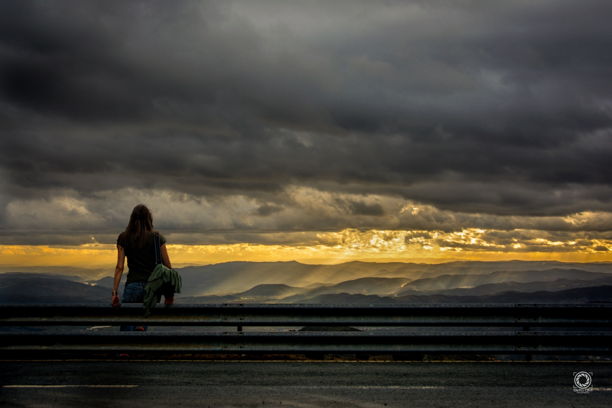

Enquadramento e composição em fotografia e vídeo
Neste site vais descobrir, de forma simples e prática, técnicas de fotografia e de gravação de vídeo., tais como:
- Planos (Tamanho do Enquadramento);
- Ângulos (Ponto de Vista);
- Composição (Regra dos Terços);
- Movimentos (Panorâmica, Travelling e Zoom).

Planos
O que mostrar: do plano geral ao plano de pormenor.
Abrir PlanosÂngulos
De onde "olhamos": ao nível dos olhos, picado, contra-picado.
Abrir ÂngulosRegra dos Terços
Grelha de 3x3: para posicionar o assunto e criar equilíbrio.
Abrir Regra dos TerçosMovimentos
Quando usar: panorâmica, zoom, travelling. Erros comuns e prática.
Abrir Movimentos